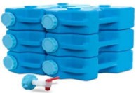
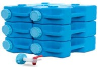

Junho 2025
Este mês, nossas metas incluem um suprimento de 2 meses de produtos enlatados com alto teor de proteína, verificar seu armazenamento de água e kit de primeiros socorros.
Um armazenamento de pronto para comer, uma refeição é útil em emergências ou em curtos períodos em que você precisa sobreviver com a comida da sua despensa, por 2 meses. Isso pode incluir períodos de doença ou dificuldades financeiras inesperadas, bem como desastres naturais. Alimentos enlatados são estáveis em prateleira, não requerem refrigeração até serem abertos. Podem ser consumidos diretamente da lata ou com aquecimento mínimo. Existe uma grande variedade de alimentos enlatados, incluindo sopas, carnes, vegetais e frutas, permitindo uma dieta balanceada.
Eles podem fornecer uma fonte prontamente disponível de calorias, gorduras, carboidratos e até fibras, oferecendo uma opção de refeição balanceada durante emergências. Sopas enlatadas, em particular, são excelentes para refeições rápidas e fáceis, e seu alto teor de água pode ajudar na hidratação caso haja escassez de água.
Seleções ricas em proteínas fornecerão energia sustentada. Salmão, frango, atum – todos eles vêm em lata. Ao incluí-los na sua dieta regular, sua vida útil permanece inalterada. Um sanduíche de salada de frango, atum ou salmão é delicioso e fácil de fazer, ou pode ser consumido com biscoitos. Carne enlatada inclui carne de porco desfiada, carne bovina, carne enlatada e Spam. Chile (chili de frango vermelho ou branco) é farto e totalmente cozido. Sopas substanciosas também são econômicas e podem ser aquecidas em um fogão portátil. Feijão enlatado pode ser comido com uma tortilha para uma refeição rápida.
 

Armazenamento de água em vários recipientes, assim como um purificador de água, é algo a verificar em seu estoque de 2 meses. A água armazenada em recipientes limpos e próprios para alimentos pode durar até 6 a 12 meses se mantida em local fresco e protegido da luz. É importante rotacionar a água periodicamente para garantir sua qualidade. O uso de comprimidos de cloro é uma forma eficaz de desinfetar a água, eliminando bactérias e vírus, tornando-a segura para consumo. Siga sempre as instruções do fabricante para dosagem e tempo de espera, e prefira água previamente filtrada ou limpa antes do tratamento. A água tratada pode apresentar um leve gosto de cloro, que tende a desaparecer se deixada ao ar por algum tempo.
Kit básico de primeiros socorros, estoque com itens que complementam suas necessidades e as necessidades da sua família. Itens sugeridos incluem óleo consagrado, band-aids, absorventes Telfa, esparadrapo, gaze enrolada, fitas adesivas Steri-strips, absorvente abdominal, colírio, pomada Neosporin, pomada de hidrocortisona, gel para queimaduras, protetor solar, anti-histamínico, aspirina infantil, paracetamol, ibuprofeno, solução eletrolítica em pó e balas. Além disso, considere um suprimento extra de medicamentos prescritos para 3 meses.